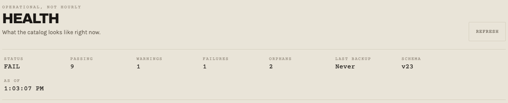

Fictional local demonstration · October 1, 2026
KNWN · Walkthrough & Verification Notes
KNWN brings music catalog organization, rights information, paperwork, and recipient sharing into a workflow people can operate with their own infrastructure. I own the project, define its requirements, and direct preparation for a three-person private beta; AI assistants contributed implementation and tests. The work includes participant onboarding, user guidance, and research into credible, affordable implementation options. The recording uses fictional data to demonstrate selected workflows. Beta preparation is in progress; user-validation results are not yet established.
- Browse three fictional recordings in Music. Select Released to narrow the catalog to one recording.
- Open Lantern Sessions - Fictional Demo under Projects. Add the Main and Instrumental versions of Paper Lantern Index. The project now contains two tracks.
- Return to Music and open Share for the Main recording. Select the fictional contact Nia Cartwright (example.test). Choose 7 days, downloads off, and 3 opens.
- Close the share form before Mint & Share. No link is created or sent in this recorded workflow.
- Inspect the separate health-summary screenshot: one seeded missing file produces a failure; one untracked file produces a warning. This is an intentional exception in fictional data.
Actual screen recording · English interface · no audio narration
Intentional exception

The screenshot is cropped to show the actual status summary. It omits internal diagnostics. The recording includes explanatory captions added for this portfolio; the application behavior is unchanged.
Verification and limits
Help people who manage or review music organize their catalogs, track versions and rights information, prepare paperwork, and share with named recipients. I defined a private beta for three personally invited adults, lasting 30 days from successful setup with no software fee. Onboarding asks how each person works with music, how they currently manage their catalog, and which three needs matter most. The role options cover artists and songwriters, producers, catalog managers, licensing professionals, and people who primarily receive music; these are intended perspectives to identify, not a confirmed participant-role breakdown.
Keep software verification separate from user validation. On October 1, 2026, the demonstrated source revision passed 750 tests across 84 files; three optional audio-analysis tests were skipped. Type checks, the interface build, and the repository consistency check passed. The planned beta uses onboarding priorities, a closing survey, and optional participant-reviewed usage reports to assess usefulness. Reporting is intended to cover limited activity counts and sanitized errors, not catalog contents. Final survey wording and success thresholds remain open; no beta outcomes or savings are claimed.
I set a $0 incremental infrastructure target and required implementation choices to be grounded in credible sources. The beta feasibility work compares official provider documentation, ongoing free allowances versus temporary credits, and costs beyond compute: storage, transfer, backup, and recovery. It considers existing personal hardware and a free cloud option, including capacity and availability tradeoffs. These choices support the aim of affordable catalog management without treating a free server as proof of a free complete service. The full setup still needs qualification against its limits.
Before invitations, complete repeatable setup, verified backup and recovery, public-sharing qualification, the 30-day continuation and exit controls, reviewed terms, and final release checks. Participant accounts and catalogs remain under participant control. Optional reporting must be reviewed before sending; it is not automatic access to someone’s music or recipient data. The beta plan preserves local catalog use, playback, and exports after noncontinuation. Current documentation and the later setup discussion differ on some completed preparation steps, so the proof of concept is distinguished from full beta readiness. Core implementation and private planning documents stay outside this portfolio.
Back to projectDemostración local ficticia · 1 de octubre de 2026
KNWN · Guía y notas de verificación
KNWN reúne la organización del catálogo musical, la información de derechos, la documentación y el envío a destinatarios en un flujo que cada persona puede operar con su propia infraestructura. Soy responsable del proyecto, defino sus requisitos y dirijo la preparación de una beta privada de tres participantes; los asistentes de IA contribuyeron a la implementación y las pruebas. El trabajo incluye incorporación de participantes, guías de uso e investigación de opciones de implementación fiables y asequibles. La grabación utiliza datos ficticios para mostrar algunos flujos. La preparación de la beta sigue en curso; todavía no hay resultados establecidos de validación con usuarios.
- Explora tres grabaciones ficticias en Music. Selecciona Released para filtrar el catálogo hasta una sola grabación.
- Abre Lantern Sessions - Fictional Demo en Projects. Añade las versiones Main e Instrumental de Paper Lantern Index. El proyecto contiene ahora dos pistas.
- Vuelve a Music y abre Share para la grabación Main. Selecciona el contacto ficticio Nia Cartwright (example.test). Elige 7 días, descargas desactivadas y 3 aperturas.
- Cierra el formulario antes de Mint & Share. En este flujo grabado no se crea ni se envía ningún enlace.
- Revisa la captura independiente del resumen de estado: un archivo ausente preparado para la prueba produce un fallo y un archivo sin registrar produce una advertencia. Es una incidencia intencionada con datos ficticios.
Grabación real de pantalla · interfaz en inglés · sin narración de audio
Incidencia intencionada
La captura está recortada para mostrar el resumen real de estado. Omite los diagnósticos internos. La grabación incluye subtítulos explicativos añadidos para este portafolio; el comportamiento de la aplicación no se ha modificado.
Verificación y límites
Ayudar a quienes gestionan o revisan música a organizar sus catálogos, controlar versiones e información de derechos, preparar documentación y compartir con destinatarios concretos. Definí una beta privada para tres adultos invitados personalmente, con una duración de 30 días desde la configuración satisfactoria y sin coste de software. La incorporación pregunta cómo trabaja cada persona con música, cómo gestiona actualmente su catálogo y qué tres necesidades considera prioritarias. Las opciones incluyen artistas y compositores, productores, gestores de catálogos, profesionales de licencias y personas que principalmente reciben música; son perspectivas que se pretende identificar, no una distribución confirmada de los perfiles participantes.
Distinguir la verificación del software de la validación con usuarios. El 1 de octubre de 2026, la revisión de código demostrada superó 750 pruebas en 84 archivos; se omitieron tres pruebas opcionales de análisis de audio. Se superaron la comprobación de tipos, la compilación de la interfaz y la comprobación de coherencia del repositorio. La beta prevista utiliza las prioridades iniciales, una encuesta final e informes de uso opcionales revisados por el participante para evaluar su utilidad. Los informes previstos incluyen recuentos limitados de actividad y errores sin datos sensibles, no el contenido del catálogo. La redacción final de la encuesta y los umbrales de éxito siguen pendientes; no se afirman resultados de la beta ni ahorros.
Establecí un objetivo de cero costes incrementales de infraestructura y exigí que las decisiones de implementación se basaran en fuentes fiables. El estudio de viabilidad compara documentación oficial de proveedores, niveles gratuitos permanentes frente a créditos temporales y costes más allá del cómputo: almacenamiento, transferencia, copias de seguridad y recuperación. Considera equipos personales existentes y una opción gratuita en la nube, con sus limitaciones de capacidad y disponibilidad. Estas decisiones apoyan una gestión asequible del catálogo sin considerar que un servidor gratuito demuestra que todo el servicio lo sea. La configuración completa aún debe verificarse frente a sus límites.
Antes de enviar invitaciones, completar una configuración repetible, copias de seguridad y recuperación verificadas, pruebas de la entrega pública, controles de continuación y salida de los 30 días, condiciones revisadas y comprobaciones finales de lanzamiento. Las cuentas y los catálogos permanecen bajo el control del participante. Los informes opcionales deben revisarse antes de enviarse; no dan acceso automático a la música ni a los datos de destinatarios. El plan conserva el uso local del catálogo, la reproducción y las exportaciones si no se continúa. La documentación y la conversación posterior difieren sobre algunos pasos ya completados, por lo que se distingue la prueba de concepto de la preparación completa de la beta. La implementación central y los documentos privados de planificación quedan fuera de este portafolio.
Volver al proyectoFiktiv lokal demonstration · 1. oktober 2026
KNWN · Gennemgang og verifikationsnoter
KNWN samler organisering af musikkataloger, rettighedsoplysninger, dokumenter og deling med modtagere i en arbejdsgang, som brugerne kan drive på deres egen infrastruktur. Jeg ejer projektet, fastlægger kravene og leder forberedelsen af en privat beta med tre deltagere; AI-assistenter bidrog til implementering og tests. Arbejdet omfatter introduktion af deltagere, brugervejledninger og undersøgelse af troværdige, økonomisk overkommelige implementeringsmuligheder. Optagelsen viser udvalgte arbejdsgange med fiktive data. Betaen er under forberedelse; der foreligger endnu ikke dokumenterede resultater fra brugerevaluering.
- Gennemse tre fiktive indspilninger i Music. Vælg Released for at indsnævre kataloget til én indspilning.
- Åbn Lantern Sessions - Fictional Demo under Projects. Tilføj versionerne Main og Instrumental af Paper Lantern Index. Projektet indeholder nu to numre.
- Gå tilbage til Music, og åbn Share for Main-indspilningen. Vælg den fiktive kontakt Nia Cartwright (example.test). Vælg 7 dage, download slået fra og 3 åbninger.
- Luk formularen før Mint & Share. Der bliver hverken oprettet eller sendt et link i denne optagede arbejdsgang.
- Se det separate skærmbillede af statusoversigten: en manglende fil i testdataene giver en fejl, og en uregistreret fil giver en advarsel. Det er et bevidst testtilfælde med fiktive data.
Faktisk skærmoptagelse · engelsk grænseflade · uden indtalt fortælling
Bevidst testtilfælde
Skærmbilledet er beskåret, så det viser den faktiske statusoversigt. Interne diagnosticeringsoplysninger er udeladt. Optagelsen har forklarende tekster tilføjet til porteføljen; programmets adfærd er uændret.
Verifikation og begrænsninger
Hjælpe mennesker, der administrerer eller vurderer musik, med at organisere kataloger, holde styr på versioner og rettighedsoplysninger, klargøre dokumenter og dele med navngivne modtagere. Jeg definerede en privat beta for tre personligt inviterede voksne, som varer 30 dage fra vellykket opsætning uden softwarebetaling. Ved opstart spørges deltagerne, hvordan de arbejder med musik, hvordan de håndterer deres katalog i dag, og hvilke tre behov der betyder mest. Rollemulighederne omfatter artister og sangskrivere, producere, katalogansvarlige, licensprofessionelle og personer, der primært modtager musik; det er perspektiver, der skal afdækkes, ikke en bekræftet fordeling af deltagernes roller.
Holde softwareverifikation adskilt fra brugerevaluering. Den 1. oktober 2026 bestod den demonstrerede kildekodeversion 750 tests fordelt på 84 filer; tre valgfrie lydanalysetests blev sprunget over. Typekontrol, bygning af grænsefladen og repositoryets konsistenskontrol bestod. Den planlagte beta bruger deltagernes startprioriteter, et afsluttende spørgeskema og valgfrie brugsrapporter, som deltageren gennemgår, til at vurdere nytten. Rapporterne skal indeholde begrænsede aktivitetstal og fejl uden følsomme oplysninger, ikke katalogets indhold. Spørgeskemaets endelige ordlyd og succeskriterier er endnu ikke fastlagt; der hævdes ingen betaresultater eller besparelser.
Jeg satte et mål om nul ekstra infrastrukturomkostninger og krævede, at implementeringsvalg byggede på troværdige kilder. Betaens gennemførlighedsundersøgelse sammenligner officielle leverandørkilder, løbende gratis kvoter over for midlertidige kreditter samt omkostninger ud over selve serveren: lager, overførsel, backup og gendannelse. Den vurderer eksisterende personligt udstyr og en gratis cloudmulighed med tilhørende kapacitets- og tilgængelighedsbegrænsninger. Valgene støtter målet om økonomisk overkommelig katalogstyring uden at betragte en gratis server som bevis for, at hele tjenesten er gratis. Den samlede opsætning skal stadig kvalificeres inden for sine grænser.
Før invitationer skal gentagelig opsætning, verificeret backup og gendannelse, afprøvning af offentlig deling, fortsættelses- og afslutningskontroller for de 30 dage, gennemgåede vilkår og endelige udgivelseskontroller være på plads. Konti og kataloger forbliver under deltagerens kontrol. Valgfrie rapporter skal gennemgås før afsendelse; de giver ikke automatisk adgang til musik eller modtagerdata. Betaplanen bevarer lokal katalogbrug, afspilning og eksport efter fravalg af fortsættelse. Dokumentationen og den senere opsætningssamtale er ikke enige om alle afsluttede forberedelsestrin, så den fungerende afprøvning adskilles fra en fuldt klargjort beta. Kerneimplementeringen og private planlægningsdokumenter indgår ikke i denne portefølje.
Tilbage til projektet